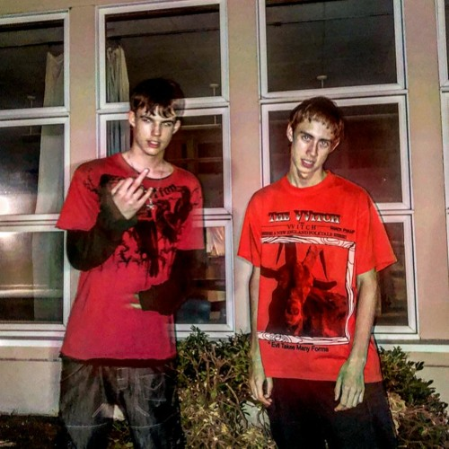
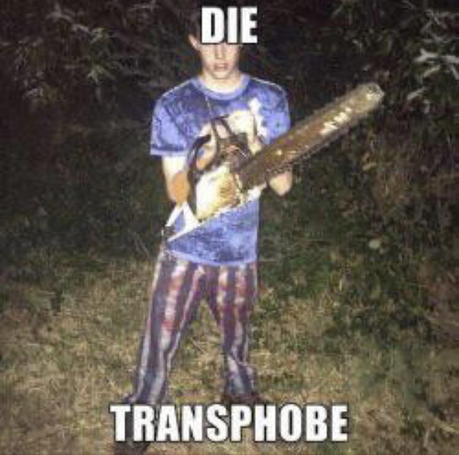
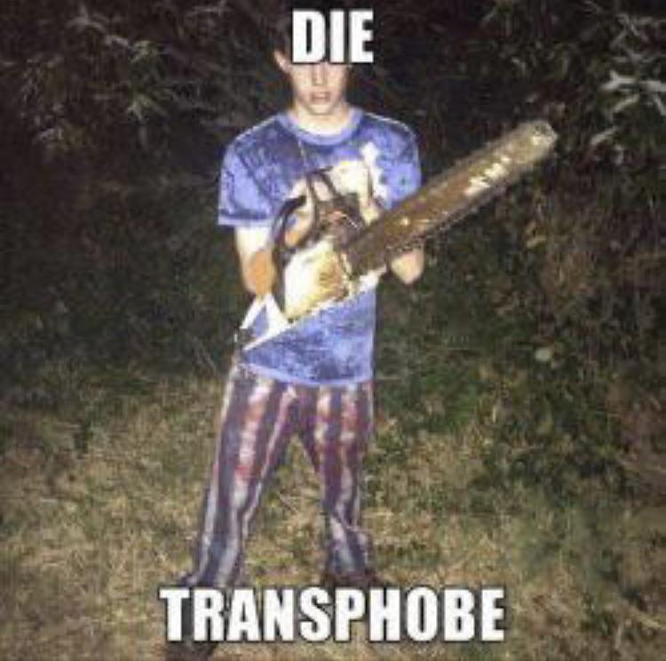

Haunted mound history
Start
Sematary was most active on Tumblr in 2013. His influences came from this Tumblr background where he got inspired by artists like chief keef, yung lean and black kray. Alongside his friend ghost mountain he uploaded their first song, Slaughter house, to Tumblr in June 2019. This song contains a lot of reoccurring themes like ghosts, knives and bang energy.
Alt-right fans
Sematary released his first solo album, Rainbow bridge, which was posted to Soundcloud on November 7th, 2019. Rainbow bridge 2 was later released on March 19th, 2020. During this time Sematary gained a lot of alt-right fans that he wanted to distance himself from. He defined himself as alt-left which led to backlash from this alt-right fanbase, leading to the deletion of his Twitter in April 2020.
By late 2020, following the release of the album Hundred Acre Wrist, Sematary reiterated his alt-left stance, threatening violence against transphobes and anti-LGBTQ individuals, intensifying the contrast between his edgelord aesthetic and alt-left beliefs, making him more of a meme subject.
 

Rise to fame
On July 21st, 2020, Ghost Mountain came back to collaborate with Sematary on Hundred Acre wrist on April 17th, 2021, Sematary's fame rose notably after the positive reception of "RAINBOW BRIDGE 3" in April 2021, especially after a good review from popular music critic Anthony Fantano. His endorsement via Twitter and a subsequent 8/10 mixtape review by Fantano further boosted Sematary's fanbase, increasing Spotify listeners to approximately 43,000 within four months.
Ghost mountains departure
In mid-2021, Ghost Mountain left the group, due to having different focuses and a lack of passion for the music. For a lot of fans, it was unclear why ghost mountain left haunted mound and speculated that there were other reasons behind the departure, like a fight between the two members. To this day we still do not know know for sure what happened, this resulted in people still trying to find the truth. Sematary has since then also deleted all the music made with ghost mountain from Spotify, making it very hard to listen to these songs and fans having to resort using reuploads from other people.
Underground Based God
Enter Underground Based God (UBG), a significant figure in haunted mound lore. UBG escalated the curiosity surrounding Ghost Mountain's departure by doxing both artists and releasing never-before-seen pictures on TikTok, even uncovering Sematary's mom's Facebook page in a quest for information. Currently UBG is banned on TikTok, but the information he released is still available online.